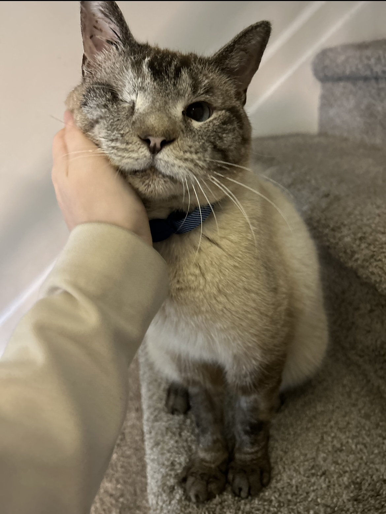
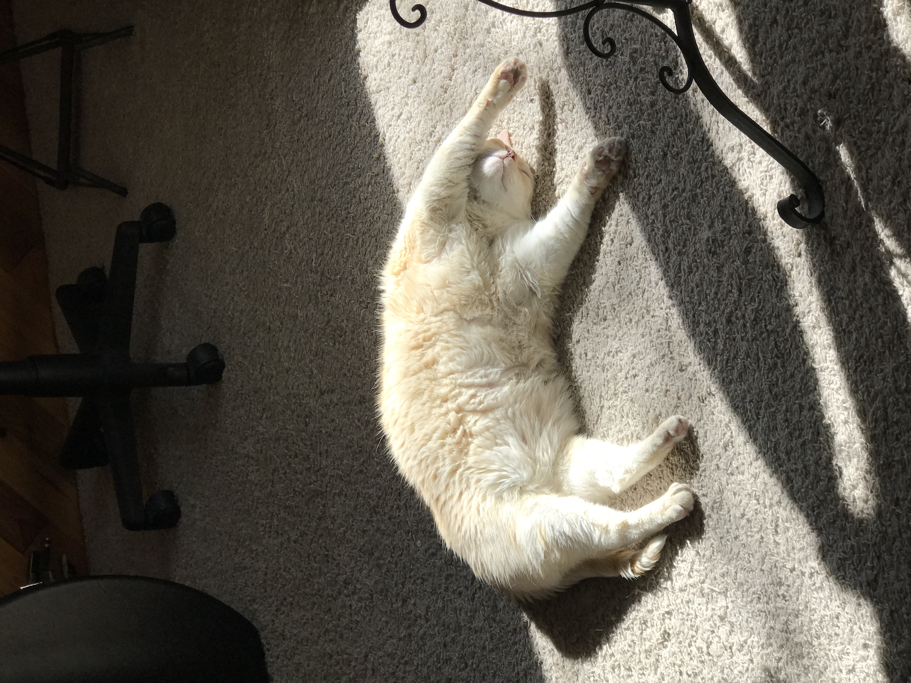
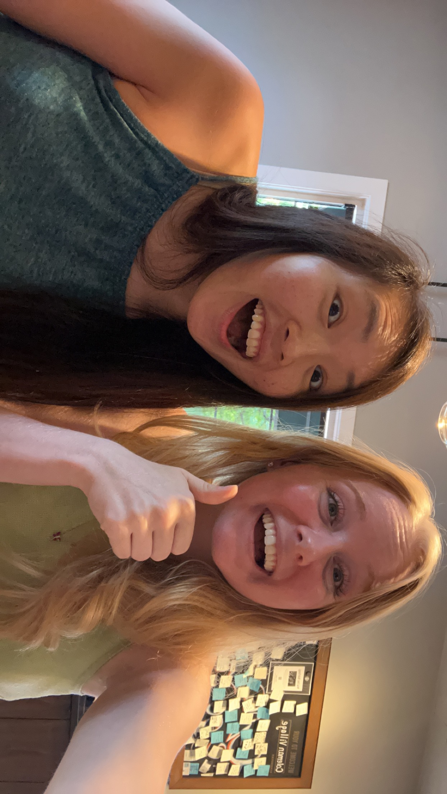

About me
Cora the Coloradan
Hello!
My name is Cora Hirst, and I am a first year Population Biology, Ecology, and evolution PhD student at Emory University. I am originally from Denver, Colorado, but I have lived in Georgia for about 6 years (and counting!)
Previous research
While my previous research experience involved bioinformatics from ancient human DNA sequences, I found that the most interesting bits about that research were
- determining whether unique evolutionary signatures could be teased out of the DNA from isolated human populations, and
- understanding the origins of the models into which I was “plugging” my sequences - can you believe I had never heard the name “Fisher” until my fourth year as an undergraduate?
That said, I focused mainly on charting allele frequency changes among genes encoding integral elements of the immune system during historic epidemics… and realized that, while it is very easy to make up a story about why genes may co-evolve with one another, it’s much more difficult (and, in my opinion, interesting) to rigourously test and theorize about those stories.
Current interests and training
Fatefully, I met my current research advisor after taking an Immunology class on a whim, and discovered that theoretical biology was not only a field, but one very closely related to the theories in population biology and evolution I was already so curious about. An incredible mathematical biologist and modeler, he took me under his wing to build my statistical, mathematical, and theoretical intuition from the ground up.
Over the past two years, I’ve greatly built upon my understanding of statistics (and surveyed statistical mechanics, as a mirror to population biology), developed a strong understanding of how to utilize R (and, from my undergraduate experience, Python) to develop and run both stochastic and determinisitic models of dynamical systems, and ventured into the realm of regression modeling to try to find deterministic factors in noisy data (and to try to understand what “noise” really means.) Mainly, I focus on questions regarding fundamental immunological mechanisms - how well does our body actually distinguishing “bad” from “good”? How does our immune system decide the amount of memory to allocate to past infections? How does the timing of effector cell recruitment determine disease outcome?
Polly Matzinger’s lecture on autoimmunity
One such area of big-picture questions that has piqued my interest lately is that of autoimmunity - for instance, why, if our immune responses are so specific and could recognize any organic compound we could ever think of manufacturing, do we not see higher instances of autoimmunity? How common is autoreactivity, and when does it lead to disease? How much do different mechanisms of self-tolerance (and other-tolerance?) contribute to reducing autoimmune disease?
The immunologist Polly Matzinger delivered a series of lectures regarding theoretical immunology, and this was one of my favorites. She’s credited with developing the “Danger Model” of immune system activation, which helps to explain how our immune systems can specifically target pathogens, but not our own cells.
The autoimmunity lecture is a nice comment on how this mechanism of distinguishing “good self” from “harmful other” might go awry. Our immune systems may have a difficult time discerning “harmful self” like cancers or “good other” like commensals, and this challenge may be compounded by pathogens who evolve to look more like us, by an increased amount of time we are inflamed, or by naivety (age).
She’s also pretty cool - as a graduate student, here advisor insited she publish a paper she worked on all by herself. Afraid she wouldn’t be taken seriously, she included her dog as a co-author.
Why I’ve decided to join this virtual community
Dr. Handel graciously allowed me to participate in this course, and from it I’m hoping to both improve my fluency in R (particulaly, how to write neat, manageable, and reproducible code), while also becoming more comfortable with statistics for data analysis (both real-life data and data that is generated in situ.) The tricky thing is, we have so many fun ideas to play with, and now it’s the time to become more rigourous in that endeavour!
Photo gallery?

He’s a rescue, with one eye, FIV, and a reset jaw. But he’s perfectly (purr-fectly?) happy and relatively healthy with the help of antibiotics, and sounds a little like Darth Vador when he breathes :) Plus, I’ve been interested in dynamical systems models of HIV infections, so to me, the little man is a treasure trove of interesting immunology!

He’s a rescue too (of sorts - we collected him as a kitten from a box in front of a grocery store.) Tails - named after the Sonic the Hedgehog character, which seven-year-old me was adament about explaining - has been a part of our family for nearly 16 years, and while he’s not the brightest bulb, he sure is fun to mess with!
